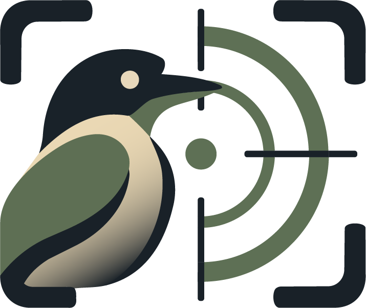

Welcome to Lifer
Your wildlife photos, organised by species, with a checklist of everything there is to find where you photograph.
In birding, a lifer is a species you see for the first time. Lifer keeps track of yours.
Where should your library live?
You can change this later from the Lifer menu.
This only happens the first time.
Connect to your server
Enter the address you open Lifer at in a browser. You'll sign in on the next screen.
Add more external addresses later from Settings > Server.